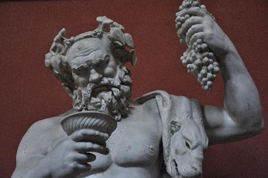
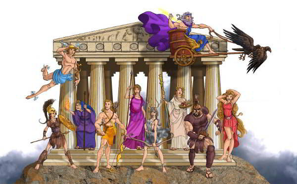
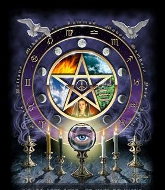
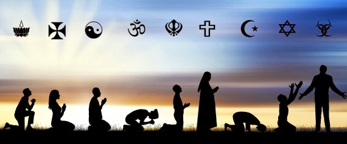

¿QUÉ ES EL PENSAMIENTO PREFILOSOFICO?

El pensamiento pre-filosófico es el nombre que se le da por las características de como la inteligencia era de creencias mágicas, religiosas y míticos. El ser humano del pasado y del presente siempre ha tratado de saber su propio origen, el desarrollo de las cosas, como se dio origen a la naturaleza entre otros conceptos que poco a poco se han ido desarrollando a través del tiempo y que en el presente se dan hipótesis sobre esto. Por otro lado, el pensamiento pre-filosófico era algo mítico y que se ponía como base principal las leyendas y la magia, en el que se decía que los objetos, humanos y naturaleza habían aparecido tras algún hecho mágico o con acciones sobrenaturales y que ahora miramos como irreales. Esta se podría considerar como la forma que tenían que pensar del mundo de los pueblos primates y se caracterizaba por ideas y representaciones no avaladas por la comprobación científica. En este periodo pre-filosófico, el hombre no tenía la conciencia de la sistematicidad de los propios hechos ocurridos, fenómenos y un proceso de la propia realidad de la naturaleza. Como habrá sido el pensamiento pre-filosófico que ayudaría alpensamiento filosófico a través de lo mágico, mítico, y lógico para desarrollar a través de la actualidad.
CARACTERISTICAS DEL PENSAMIENTO PREFILOSOFICO (MAGIA, RELIGIÓN Y MITO)
MITO: Un mito es un relato preservado gracias a la tradición oral o de símbolos; pueden existir muchas versiones de un mismo mito.
Los mitos:

- Mantienen un trasfondo de misterio, los aspectos inexplicables dependen de una voluntad divina o mágica.
- Sus personajes son de todo tipo.
- No hay verdad o falsedad.
- Emplean la imaginación en una narración simbólica, basada en la creencia y no en la razón.
- La función principal del mito es explicar situaciones cuando se carece de una explicación racional
Existen diferentes tipos de mitos
Existen diferentes tipos de mitos
- Cosmogónicos: Intentan explicar el origen del universo.
- Teogónicos: Narran la historia y el origen de distintos dioses.
- Antropológicos: Explican la creación del hombre.
- Escatológicos: Predicen cómo será el fin del mundo
SITUACIONES REALES:
- En la actualidad seguimos creyendo que el sol es de color amarillo, Lo vemos amarillo por la atmósfera, pero en realidad es blanco. Este es uno de los mistos que hasta la fecha se siguen creyendo.
- Otro de los mitos que se siguen creyendo es que, si saliéramos al espacio sin traje, explotaríamos. La forma de morir en este caso es bastante más aburrida, la falta de oxígeno nos haría perder la conciencia en sólo 15 segundos.

MAGIA: En la magia se asume que todo el mundo, y todas las cosas dentro de él, tienen voluntad propia.
El mago se comunica por medio de encantamientos, exorcismos, filtros y talismanes.
Una característica de la magia es el carácter violento de las operaciones las cuales hacen obedecer a las fuerzas naturales. La magia es una estrategia de asalto que pretende conquistar de un solo golpe.
Su función es intentar suplir con instrumentos sobrenaturales la falta o la imperfección de los instrumentos naturales
SITUACIONES REALES:
- Actuales mentes existen personas que acuden a la magia negra, la magia blanca, las brujas, los yerbateros y los chamanes para que les hagan una limpia, hechizos de amor, medicinas, etc. Aquí se comprueba que las personas si creen en la magia y hay quienes la practican para su uso personal.

RELIGIÓN: Es un sistema de creencias que proponen una garantía de salvación después de la muerte. Las religiones son cosmovisiones basadas en el dogma, se dan en la intimidad de la conciencia individual, gracias a la fe y a la permanencia de lo emotivo o sentimental. Sobrepasa los límites a los que pueden llegar los poderes reconocidos como propios del ser humano. Su función es reforzar actitudes especiales, como el valor y la fe en la lucha contra la dificultad
SITUACIONES REALES:
- Una de las principales creencias en la religión es que al morir iras al cielo si fuiste una buena persona, pero si fuiste una mala persona te iras al infierno esta es una de las creencias que la humanidad sigue creyendo.
- Otra de las creencias que siguen vigentes en la actualidad es la que cuando pega un rayo te tienes que persignar para que no te caiga el rayo a ti, es una creencia que la humanidad aún cree.